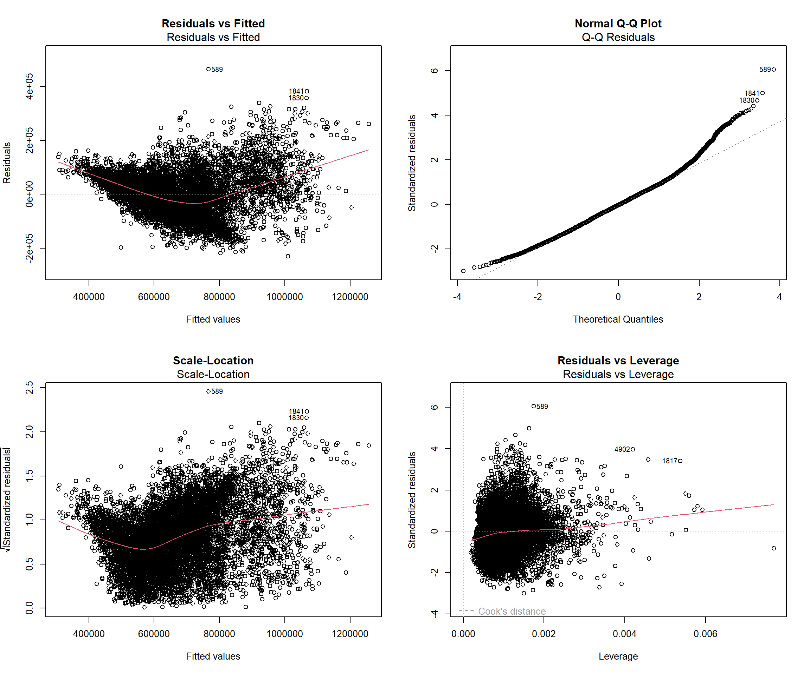
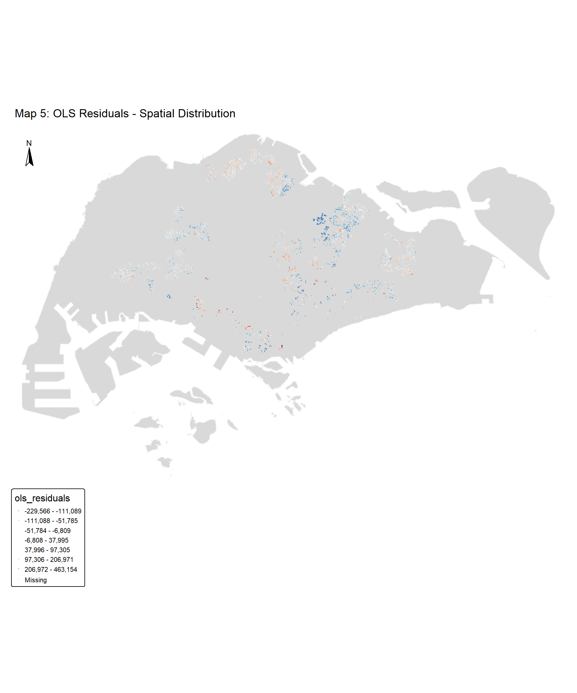

Code
pacman::p_load(sf, spdep, GWmodel, tidyverse, lubridate, tmap, ggplot2, corrplot, httr, jsonlite, patchwork, car, lmtest, sp, broom)The objective of this take-home exercise is to develop a spatially informed model to determine factors affecting or to predict HDB resale prices in Singapore, making use of appropriate geospatial analytics methods.
| Dataset Name | Description | Use Case | Format |
| HDB Resale Flat Prices | Transaction records of HDB resale flats. Filtered for 4-room flats only. | Primary outcome variable (resale_price) and source of structural predictors (floor_area_sqm, remaining_lease_years, storey_midpoint) |
CSV |
| Singapore Boundary | A polygon feature data providing information of URA 2014 Master Plan Planning Subzone boundary data | Provides spatial context for mapping. Used as basemap reference in visualizations. | SHP (point geometry) |
| Hawker Centres | Point locations of hawker centres, representing affordable dining options and community gathering spaces. | Calculate proximity to nearest hawker centre (dist_hawker) |
GeoJSON |
| Parks | Point or polygon locations of national parks, regional parks, and neighborhood parks managed by NParks. | Calculate proximity to nearest park (dist_park) |
GeoJSON |
| Supermarkets | Point locations of major supermarket chains across Singapore. | Calculate proximity to nearest supermarket (dist_supermarket) |
GeoJSON |
| Eldercare Centres | Point locations of eldercare facilities including senior activity centres, senior care centres, and nursing homes. | Calculate proximity to nearest eldercare facility (dist_eldercare), relevant for multi-generational households and aging population considerations. |
SHP (point geometry) |
| Preschools | Point locations of registered preschools across Singapore, including both public and private institutions. | Count number of kindergartens within 350m buffer (n_preschool_350m) |
GeoJSON |
| Kindergartens | Point locations of registered kindergartens across Singapore, including both public and private institutions. | Count number of kindergartens within 350m buffer (n_kindergarten_350m) |
GeoJSON |
| Childcare Centres | Point locations of licensed childcare centres providing infant and toddler care services. | Count number of childcare centres within 350m buffer (n_childcare_350m) to evaluate childcare accessibility, important for working parents. |
GeoJSON |
| Bus Stops | Point locations of all public bus stops in Singapore’s bus network. | Count number of bus stops within 350m buffer (n_busstop_350m) as a measure of public transport connectivity and accessibility. |
SHP (point geometry) |
pacman::p_load(sf, spdep, GWmodel, tidyverse, lubridate, tmap, ggplot2, corrplot, httr, jsonlite, patchwork, car, lmtest, sp, broom)# Import Singapore boundary (adjust path as needed)
singapore_boundary <- st_read(
dsn = "data/geospatial",
layer = "MP14_SUBZONE_WEB_PL", # or your boundary layer name
quiet = TRUE
) %>%
st_transform(3414) %>%
st_union() # Dissolve to single boundary
cat("✓ Singapore boundary imported\n",
" CRS:", st_crs(singapore_boundary)$input, "\n")✓ Singapore boundary imported
CRS: EPSG:3414 st_bbox(singapore_boundary) xmin ymin xmax ymax
2667.538 15748.721 56396.440 50256.334 planning_areas <- st_read(
dsn = "data/geospatial",
layer = "MP14_SUBZONE_WEB_PL",
quiet = TRUE
) %>%
st_transform(3414) %>%
group_by(PLN_AREA_N) %>%
summarise(geometry = st_union(geometry), .groups = "drop") %>%
rename(town = PLN_AREA_N)geocode <- function(block, streetname) {
base_url <- "https://onemap.gov.sg/api/common/elastic/search"
address <- paste(block, streetname, sep=" ")
query <- list("searchVal" = address,
"returnGeom" = "Y",
"getAddrDetails" = "N",
"pageNum" = "1")
res <- GET(base_url, query=query)
restext <- content(res, as="text")
output <- fromJSON(restext) %>%
as.data.frame %>%
select(results.LATITUDE, results.LONGITUDE)
return(output)
}HDBresale$street_name <- gsub("ST\\.", "SAINT", HDBresale$street_name)HDBresale$LATITUDE <- 0
HDBresale$LONGITUDE <- 0
for (i in 1:nrow(HDBresale)) {
temp_output <- geocode(HDBresale[i, 4], HDBresale[i, 5])
HDBresale$LATITUDE[i] <- temp_output$results.LATITUDE
HDBresale$LONGITUDE[i] <- temp_output$results.LONGITUDE
}HDBresale_sf <- HDBresale %>%
st_as_sf(
coords = c("LONGITUDE", "LATITUDE"),
crs=4326
) %>%
st_transform(crs=3414)cbd_data <- data.frame(
name = c("Raffles Place", "Tanjong Pagar", "Marina Bay"),
x = c(30214.5, 29527.8, 31324.7),
y = c(29414.2, 28645.1, 29877.3)
)hawkerCenters = st_read(
"data/geospatial/HawkerCentresGEOJSON.geojson") %>%
st_transform(crs= 3414)parks = st_read(
"data/geospatial/Parks.geojson") %>%
st_transform(crs= 3414)supermarkets = st_read(
"data/geospatial/SupermarketsGEOJSON.geojson") %>%
st_transform(crs= 3414)eldercare <- st_read(
dsn = "data/geospatial",
layer = "ELDERCARE"
) %>%
st_transform(crs = 3414)preschool = st_read(
"data/geospatial/PreSchoolsLocation.kml") %>%
st_transform(crs= 3414)kindergartens = st_read(
"data/geospatial/Kindergartens.geojson") %>%
st_transform(crs= 3414)childCareServices = st_read(
"data/geospatial/ChildCareServices.geojson") %>%
st_transform(crs= 3414)# Preschool
within_350m <- st_is_within_distance(
HDBresale_sf, preschool, dist = 350)
HDBresale_sf <- HDBresale_sf %>%
mutate(N_350M_PRESCHOOL = map_int(within_350m, length))
# Kindergartens
within_350m <- st_is_within_distance(
HDBresale_sf, kindergartens, dist = 350)
HDBresale_sf <- HDBresale_sf %>%
mutate(N_350M_KINDERG = map_int(within_350m, length))
# Child care
within_350m <- st_is_within_distance(
HDBresale_sf, childCareServices, dist = 350)
HDBresale_sf <- HDBresale_sf %>%
mutate(N_350M_CHILDCARE = map_int(within_350m, length))
# Bus Stop
within_350m <- st_is_within_distance(
HDBresale_sf, busStops, dist = 350)
HDBresale_sf <- HDBresale_sf %>%
mutate(N_350M_BUSSTOP = map_int(within_350m, length))calc_nearest_dist <- function(from_geom, to_sf) {
as.numeric(
st_distance(
from_geom,
to_sf[st_nearest_feature(from_geom, to_sf), ],
by_element = TRUE
)
)
}hdb_model <- HDBresale_sf %>%
mutate(
PROX_CBD = calc_nearest_dist(geometry, cbd_sf),
PROX_HAWKER = calc_nearest_dist(geometry, hawkerCenters),
PROX_PARK = calc_nearest_dist(geometry, parks),
PROX_SUPERMARKET = calc_nearest_dist(geometry, supermarkets),
PROX_ELDERCARE = calc_nearest_dist(geometry, eldercare)
)
hdb_modelglimpse(hdb_model)Rows: 8,679
Columns: 21
$ month <chr> "2025-01", "2025-01", "2025-01", "2025-02", "2025-…
$ town <chr> "ANG MO KIO", "ANG MO KIO", "ANG MO KIO", "ANG MO …
$ flat_type <chr> "4 ROOM", "4 ROOM", "4 ROOM", "4 ROOM", "4 ROOM", …
$ block <chr> "337", "310C", "337", "226", "310C", "226", "304",…
$ street_name <chr> "ANG MO KIO AVE 1", "ANG MO KIO AVE 1", "ANG MO KI…
$ storey_range <chr> "13 TO 15", "10 TO 12", "10 TO 12", "07 TO 09", "2…
$ floor_area_sqm <dbl> 91, 94, 91, 91, 96, 92, 98, 97, 94, 87, 97, 82, 92…
$ flat_model <chr> "New Generation", "Model A", "New Generation", "Ne…
$ lease_commence_date <dbl> 1982, 2012, 1982, 1978, 2012, 1978, 1977, 1977, 20…
$ remaining_lease <chr> "56 years 03 months", "86 years 09 months", "56 ye…
$ resale_price <dbl> 582000, 865000, 530000, 560000, 1038000, 542000, 6…
$ geometry <POINT [m]> POINT (30036.29 38360.76), POINT (29283.45 3…
$ N_350M_PRESCHOOL <int> 3, 6, 3, 7, 6, 7, 6, 8, 2, 2, 2, 2, 6, 7, 6, 6, 7,…
$ N_350M_KINDERG <int> 1, 1, 1, 2, 1, 2, 1, 1, 0, 0, 0, 0, 2, 1, 1, 1, 2,…
$ N_350M_CHILDCARE <int> 3, 5, 3, 5, 5, 5, 5, 7, 2, 2, 2, 2, 4, 6, 5, 5, 5,…
$ N_350M_BUSSTOP <int> 7, 4, 7, 7, 4, 7, 6, 7, 5, 5, 5, 5, 6, 4, 4, 4, 7,…
$ PROX_CBD <dbl> 8580.742, 8877.927, 8580.742, 9398.605, 8877.927, …
$ PROX_HAWKER <dbl> 388.7647, 381.4729, 388.7647, 132.0052, 381.4729, …
$ PROX_PARK <dbl> 425.5483, 635.8962, 425.5483, 356.4783, 635.8962, …
$ PROX_SUPERMARKET <dbl> 284.9091, 314.4801, 284.9091, 186.2702, 314.4801, …
$ PROX_ELDERCARE <dbl> 259.7684, 254.9544, 259.7684, 397.6108, 254.9544, …Dataset dimensions: 8679 rows × 21 columnsmissing_summary <- hdb_model %>%
st_drop_geometry() %>% # Remove geometry for cleaner summary
summarise(across(everything(), ~sum(is.na(.)))) %>%
pivot_longer(everything(), names_to = "variable", values_to = "missing_count") %>%
filter(missing_count > 0) %>%
arrange(desc(missing_count))
if(nrow(missing_summary) > 0) {
cat("\n⚠ Missing values detected:\n")
print(missing_summary)
} else {
cat("\n✓ No missing values detected\n")
}
✓ No missing values detectedPurpose: Prepare structural variables for modeling
hdb_clean <- hdb_model %>%
mutate(
# Convert storey_range (e.g., "13 TO 15" → 14)
storey_midpoint = as.numeric(str_extract(storey_range, "^\\d+")) + 1,
# Convert remaining_lease to numeric years
# Original format like "56 years 03 months"
remaining_lease_years = case_when(
str_detect(remaining_lease, "years") & str_detect(remaining_lease, "months") ~
as.numeric(str_extract(remaining_lease, "^\\d+")) +
as.numeric(str_extract(remaining_lease, "(?<=years )\\d+")) / 12,
str_detect(remaining_lease, "years") ~
as.numeric(str_extract(remaining_lease, "^\\d+")),
TRUE ~ NA_real_
),
# Convert month to date
month_date = as.Date(paste0(month, "-01")),
# Extract year and month for temporal analysis
year = year(month_date),
month_num = month(month_date)
)
# Check transformations
cat("✓ Storey midpoint range:",
min(hdb_clean$storey_midpoint, na.rm = TRUE), "to",
max(hdb_clean$storey_midpoint, na.rm = TRUE), "\n",
"✓ Remaining lease range:",
round(min(hdb_clean$remaining_lease_years, na.rm = TRUE), 1), "to",
round(max(hdb_clean$remaining_lease_years, na.rm = TRUE), 1), "years\n")✓ Storey midpoint range: 2 to 50
✓ Remaining lease range: 40.4 to 95.3 yearsresale_price and resale_priceOutliers in resale_price: 613 ( 7.06 %)Outliers in floor_area_sqm: 118 ( 1.36 %)
# par(mfrow = c(1, 1))For now, we don’t remove outliers yet. We just flag them using 2 additional columns of outlier_price and outlier_area, and keep in the dataset. Those detected will be report “TRUE” in outlier_price or outlier_area columns.
hdb_clean <- hdb_clean %>%
mutate(
outlier_price = detect_outliers(resale_price),
outlier_area = detect_outliers(floor_area_sqm)
)
hdb_cleanSimple feature collection with 8679 features and 27 fields
Geometry type: POINT
Dimension: XY
Bounding box: xmin: 11597.31 ymin: 28287.8 xmax: 42645.18 ymax: 48741.06
Projected CRS: SVY21 / Singapore TM
# A tibble: 8,679 × 28
month town flat_type block street_name storey_range floor_area_sqm
* <chr> <chr> <chr> <chr> <chr> <chr> <dbl>
1 2025-01 ANG MO KIO 4 ROOM 337 ANG MO KIO AV… 13 TO 15 91
2 2025-01 ANG MO KIO 4 ROOM 310C ANG MO KIO AV… 10 TO 12 94
3 2025-01 ANG MO KIO 4 ROOM 337 ANG MO KIO AV… 10 TO 12 91
4 2025-02 ANG MO KIO 4 ROOM 226 ANG MO KIO AV… 07 TO 09 91
5 2025-02 ANG MO KIO 4 ROOM 310C ANG MO KIO AV… 28 TO 30 96
6 2025-02 ANG MO KIO 4 ROOM 226 ANG MO KIO AV… 04 TO 06 92
7 2025-03 ANG MO KIO 4 ROOM 304 ANG MO KIO AV… 10 TO 12 98
8 2025-03 ANG MO KIO 4 ROOM 303 ANG MO KIO AV… 04 TO 06 97
9 2025-03 ANG MO KIO 4 ROOM 310B ANG MO KIO AV… 16 TO 18 94
10 2025-03 ANG MO KIO 4 ROOM 310B ANG MO KIO AV… 16 TO 18 87
# ℹ 8,669 more rows
# ℹ 21 more variables: flat_model <chr>, lease_commence_date <dbl>,
# remaining_lease <chr>, resale_price <dbl>, geometry <POINT [m]>,
# N_350M_PRESCHOOL <int>, N_350M_KINDERG <int>, N_350M_CHILDCARE <int>,
# N_350M_BUSSTOP <int>, PROX_CBD <dbl>, PROX_HAWKER <dbl>, PROX_PARK <dbl>,
# PROX_SUPERMARKET <dbl>, PROX_ELDERCARE <dbl>, storey_midpoint <dbl>,
# remaining_lease_years <dbl>, month_date <date>, year <dbl>, …structural_vars <- c("resale_price", "floor_area_sqm", "storey_midpoint",
"remaining_lease_years")
structural_summary <- hdb_clean %>%
st_drop_geometry() %>%
select(all_of(structural_vars)) %>%
summarise(across(everything(),
list(mean = ~mean(., na.rm = TRUE),
median = ~median(., na.rm = TRUE),
sd = ~sd(., na.rm = TRUE),
min = ~min(., na.rm = TRUE),
max = ~max(., na.rm = TRUE)),
.names = "{.col}_{.fn}")) %>%
pivot_longer(everything(), names_to = "stat", values_to = "value") %>%
separate(stat, into = c("variable", "statistic"), sep = "_(?=[^_]+$)") %>%
pivot_wider(names_from = statistic, values_from = value)
knitr::kable(structural_summary,
digits = 2,
caption = "Descriptive Statistics: Structural Variables",
col.names = c("Variable", "Mean", "Median", "SD", "Min", "Max"))| Variable | Mean | Median | SD | Min | Max |
|---|---|---|---|---|---|
| resale_price | 672451.30 | 630000.00 | 160615.64 | 300000.00 | 1.518e+06 |
| floor_area_sqm | 94.89 | 93.00 | 6.74 | 74.00 | 1.350e+02 |
| storey_midpoint | 9.29 | 8.00 | 6.37 | 2.00 | 5.000e+01 |
| remaining_lease_years | 76.34 | 75.83 | 14.12 | 40.42 | 9.533e+01 |
# Create histogram panels for key variables
# Resale price distribution
p1 <- ggplot(hdb_clean, aes(x = resale_price)) +
geom_histogram(bins = 50, fill = "#440154", alpha = 0.7) +
geom_vline(aes(xintercept = median(resale_price)),
color = "red", linetype = "dashed", linewidth = 1) +
labs(title = "Distribution of Resale Prices",
x = "Resale Price (SGD)", y = "Frequency") +
scale_x_continuous(labels = scales::comma) +
theme_minimal()
# Floor area distribution
p2 <- ggplot(hdb_clean, aes(x = floor_area_sqm)) +
geom_histogram(bins = 30, fill = "#31688e", alpha = 0.7) +
geom_vline(aes(xintercept = median(floor_area_sqm)),
color = "red", linetype = "dashed", linewidth = 1) +
labs(title = "Distribution of Floor Area",
x = "Floor Area (sqm)", y = "Frequency") +
theme_minimal()
# Remaining lease distribution
p3 <- ggplot(hdb_clean, aes(x = remaining_lease_years)) +
geom_histogram(bins = 40, fill = "#35b779", alpha = 0.7) +
geom_vline(aes(xintercept = median(remaining_lease_years)),
color = "red", linetype = "dashed", linewidth = 1) +
labs(title = "Distribution of Remaining Lease",
x = "Remaining Lease (years)", y = "Frequency") +
theme_minimal()
# Storey distribution
p4 <- ggplot(hdb_clean, aes(x = storey_midpoint)) +
geom_histogram(bins = 20, fill = "#fde724", alpha = 0.7) +
geom_vline(aes(xintercept = median(storey_midpoint)),
color = "red", linetype = "dashed", linewidth = 1) +
labs(title = "Distribution of Storey Level",
x = "Storey Midpoint", y = "Frequency") +
theme_minimal()
# Combine plots
(p1 + p2) / (p3 + p4) +
plot_annotation(
title = "Distribution of Structural Variables",
subtitle = "Red dashed line indicates median value"
)
# --- Location Variables: Counts (within buffer) ---
count_vars <- names(hdb_clean)[str_detect(names(hdb_clean), "^N_")]
count_summary <- hdb_clean %>%
st_drop_geometry() %>%
select(all_of(count_vars)) %>%
summarise(across(everything(),
list(mean = ~mean(., na.rm = TRUE),
median = ~median(., na.rm = TRUE),
sd = ~sd(., na.rm = TRUE),
min = ~min(., na.rm = TRUE),
max = ~max(., na.rm = TRUE)),
.names = "{.col}_{.fn}")) %>%
pivot_longer(everything(), names_to = "stat", values_to = "value") %>%
separate(stat, into = c("variable", "statistic"), sep = "_(?=[^_]+$)") %>%
pivot_wider(names_from = statistic, values_from = value)
knitr::kable(count_summary,
digits = 1,
caption = "Table 3: Descriptive Statistics - Count Variables (facilities within buffer)",
col.names = c("Variable", "Mean", "Median", "SD", "Min", "Max"))| Variable | Mean | Median | SD | Min | Max |
|---|---|---|---|---|---|
| N_350M_PRESCHOOL | 5.5 | 5 | 2.8 | 0 | 22 |
| N_350M_KINDERG | 0.9 | 1 | 1.1 | 0 | 8 |
| N_350M_CHILDCARE | 4.7 | 4 | 2.3 | 0 | 19 |
| N_350M_BUSSTOP | 8.0 | 8 | 2.8 | 0 | 19 |
# Count variables distributions
c1 <- ggplot(hdb_clean, aes(x = N_350M_PRESCHOOL)) +
geom_bar(fill = "#440154", alpha = 0.7) +
labs(title = "Preschools within 350m", x = "Count", y = "Frequency") +
theme_minimal()
c2 <- ggplot(hdb_clean, aes(x = N_350M_KINDERG)) +
geom_bar(fill = "#31688e", alpha = 0.7) +
labs(title = "Kindergartens within 350m", x = "Count", y = "Frequency") +
theme_minimal()
c3 <- ggplot(hdb_clean, aes(x = N_350M_CHILDCARE)) +
geom_bar(fill = "#35b779", alpha = 0.7) +
labs(title = "Childcare Centres within 350m", x = "Count", y = "Frequency") +
theme_minimal()
c4 <- ggplot(hdb_clean, aes(x = N_350M_BUSSTOP)) +
geom_bar(fill = "#fde724", alpha = 0.7) +
labs(title = "Bus Stops within 350m", x = "Count", y = "Frequency") +
theme_minimal()
(c1 + c2) / (c3 + c4) +
plot_annotation(
title = "Figure 2: Distribution of Count Variables",
subtitle = "Number of facilities within buffer zones"
)
prox_vars <- hdb_clean %>%
st_drop_geometry() %>%
select(starts_with("PROX_")) %>%
names()
location_summary <- hdb_clean %>%
st_drop_geometry() %>%
select(all_of(prox_vars)) %>%
summarise(across(everything(),
list(mean = ~mean(., na.rm = TRUE),
median = ~median(., na.rm = TRUE),
sd = ~sd(., na.rm = TRUE),
min = ~min(., na.rm = TRUE),
max = ~max(., na.rm = TRUE)),
.names = "{.col}_{.fn}")) %>%
pivot_longer(everything(), names_to = "stat", values_to = "value") %>%
separate(stat, into = c("variable", "statistic"), sep = "_(?=[^_]+$)") %>%
pivot_wider(names_from = statistic, values_from = value)
knitr::kable(location_summary,
digits = 2,
caption = "Descriptive Statistics: Location Variables (Proximity in meters)",
col.names = c("Variable", "Mean", "Median", "SD", "Min", "Max"))| Variable | Mean | Median | SD | Min | Max |
|---|---|---|---|---|---|
| PROX_CBD | 12321.88 | 12887.07 | 4550.59 | 479.92 | 20107.19 |
| PROX_HAWKER | 730.10 | 647.02 | 458.57 | 25.35 | 2500.14 |
| PROX_PARK | 749.11 | 661.03 | 406.49 | 63.81 | 2205.03 |
| PROX_SUPERMARKET | 308.43 | 278.44 | 180.39 | 0.00 | 1415.32 |
| PROX_ELDERCARE | 824.82 | 663.43 | 634.07 | 0.00 | 3282.31 |
# Transaction volume by month
t1 <- hdb_clean %>%
st_drop_geometry() %>%
count(month_date) %>%
ggplot(aes(x = month_date, y = n)) +
geom_line(color = "#440154", linewidth = 1) +
geom_point(color = "#440154", size = 2) +
labs(title = "Transaction Volume Over Time",
x = "Month", y = "Number of Transactions") +
scale_x_date(date_breaks = "1 month", date_labels = "%b %Y") +
theme_minimal() +
theme(axis.text.x = element_text(angle = 45, hjust = 1))
# Median price by month
t2 <- hdb_clean %>%
st_drop_geometry() %>%
group_by(month_date) %>%
summarise(
median_price = median(resale_price),
mean_price = mean(resale_price),
.groups = "drop"
) %>%
ggplot(aes(x = month_date)) +
geom_line(aes(y = median_price, color = "Median"), linewidth = 1) +
geom_line(aes(y = mean_price, color = "Mean"), linewidth = 1) +
geom_point(aes(y = median_price, color = "Median"), size = 2) +
geom_point(aes(y = mean_price, color = "Mean"), size = 2) +
labs(title = "Resale Price Trends Over Time",
x = "Month", y = "Resale Price (SGD)", color = "Statistic") +
scale_y_continuous(labels = scales::comma) +
scale_x_date(date_breaks = "1 month", date_labels = "%b %Y") +
scale_color_manual(values = c("Median" = "#440154", "Mean" = "#fde724")) +
theme_minimal() +
theme(axis.text.x = element_text(angle = 45, hjust = 1))
t1 / t2
# Calculate summary statistics by town
town_summary <- hdb_clean %>%
st_drop_geometry() %>%
group_by(town) %>%
summarise(
n_transactions = n(),
median_price = median(resale_price),
mean_price = mean(resale_price),
min_price = min(resale_price),
max_price = max(resale_price),
.groups = "drop"
) %>%
arrange(desc(median_price))
# Display table
knitr::kable(town_summary,
digits = 0,
caption = "Resale Price Summary by Town (4-Room Flats)",
col.names = c("Town", "Transactions", "Median Price",
"Mean Price", "Min Price", "Max Price"),
format.args = list(big.mark = ","))| Town | Transactions | Median Price | Mean Price | Min Price | Max Price |
|---|---|---|---|---|---|
| CENTRAL AREA | 60 | 1,270,000 | 1,080,769 | 526,000 | 1,518,000 |
| QUEENSTOWN | 189 | 988,000 | 967,087 | 400,000 | 1,370,000 |
| TOA PAYOH | 328 | 983,444 | 916,400 | 450,000 | 1,258,888 |
| BUKIT MERAH | 308 | 930,000 | 886,906 | 420,000 | 1,338,000 |
| CLEMENTI | 168 | 898,500 | 827,278 | 463,000 | 1,280,880 |
| KALLANG/WHAMPOA | 261 | 888,000 | 864,908 | 490,000 | 1,250,000 |
| BUKIT TIMAH | 14 | 885,000 | 815,985 | 620,000 | 966,555 |
| BISHAN | 146 | 790,444 | 780,468 | 495,000 | 1,230,000 |
| GEYLANG | 182 | 700,004 | 769,488 | 453,888 | 1,088,000 |
| PUNGGOL | 613 | 680,000 | 683,556 | 535,000 | 835,000 |
| TAMPINES | 712 | 670,000 | 687,602 | 300,000 | 925,000 |
| SERANGOON | 136 | 660,000 | 683,448 | 500,000 | 938,000 |
| MARINE PARADE | 27 | 650,000 | 648,757 | 550,000 | 730,000 |
| SENGKANG | 770 | 650,000 | 659,176 | 500,000 | 877,000 |
| PASIR RIS | 184 | 630,444 | 649,014 | 440,000 | 870,000 |
| HOUGANG | 479 | 630,000 | 630,550 | 460,000 | 860,000 |
| SEMBAWANG | 456 | 630,000 | 630,904 | 485,000 | 840,000 |
| BUKIT BATOK | 440 | 620,000 | 620,216 | 450,000 | 830,000 |
| ANG MO KIO | 231 | 595,888 | 695,169 | 472,000 | 1,138,888 |
| BEDOK | 355 | 590,000 | 655,664 | 430,000 | 980,000 |
| BUKIT PANJANG | 306 | 575,000 | 588,559 | 460,000 | 868,000 |
| YISHUN | 668 | 570,000 | 567,890 | 440,000 | 818,888 |
| CHOA CHU KANG | 395 | 560,000 | 559,798 | 420,000 | 690,000 |
| WOODLANDS | 647 | 560,000 | 566,323 | 400,000 | 740,000 |
| JURONG EAST | 110 | 549,444 | 556,538 | 445,000 | 705,000 |
| JURONG WEST | 494 | 545,000 | 555,634 | 408,000 | 780,000 |
# Top 10 most expensive towns
top10_towns <- town_summary %>%
slice_max(median_price, n = 10) %>%
ggplot(aes(x = reorder(town, median_price), y = median_price)) +
geom_col(fill = "#440154", alpha = 0.8) +
geom_text(aes(label = scales::comma(median_price)),
hjust = -0.1, size = 3) +
coord_flip() +
labs(title = "Top 10 Towns by Median Resale Price",
subtitle = "4-Room Flats (Jan-Sep 2025)",
x = "Town", y = "Median Resale Price (SGD)") +
scale_y_continuous(labels = scales::comma,
expand = expansion(mult = c(0, 0.1))) +
theme_minimal()
print(top10_towns)
# Summary by flat_model
model_summary <- hdb_clean %>%
st_drop_geometry() %>%
group_by(flat_model) %>%
summarise(
n_transactions = n(),
median_price = median(resale_price),
pct_of_total = n() / nrow(hdb_clean) * 100,
.groups = "drop"
) %>%
arrange(desc(n_transactions))
knitr::kable(model_summary,
digits = 1,
caption = "Resale Price Summary by Flat Model",
col.names = c("Flat Model", "Transactions",
"Median Price", "% of Total"),
format.args = list(big.mark = ","))| Flat Model | Transactions | Median Price | % of Total |
|---|---|---|---|
| Model A | 5,772 | 648,000 | 66.5 |
| Premium Apartment | 981 | 675,000 | 11.3 |
| New Generation | 820 | 555,000 | 9.4 |
| Simplified | 540 | 526,000 | 6.2 |
| Model A2 | 201 | 538,000 | 2.3 |
| Improved | 193 | 520,000 | 2.2 |
| DBSS | 122 | 880,000 | 1.4 |
| Type S1 | 34 | 1,369,000 | 0.4 |
| Standard | 7 | 490,000 | 0.1 |
| Premium Apartment Loft | 6 | 1,250,444 | 0.1 |
| Adjoined flat | 2 | 719,500 | 0.0 |
| Terrace | 1 | 998,000 | 0.0 |
# Price vs Floor Area
b1 <- ggplot(hdb_clean, aes(x = floor_area_sqm, y = resale_price)) +
geom_point(alpha = 0.3, color = "#440154") +
geom_smooth(method = "lm", color = "#fde724", linewidth = 1.5) +
labs(title = "Price vs Floor Area",
x = "Floor Area (sqm)", y = "Resale Price (SGD)") +
scale_y_continuous(labels = scales::comma) +
theme_minimal()
# Price vs Remaining Lease
b2 <- ggplot(hdb_clean, aes(x = remaining_lease_years, y = resale_price)) +
geom_point(alpha = 0.3, color = "#31688e") +
geom_smooth(method = "lm", color = "#fde724", linewidth = 1.5) +
labs(title = "Price vs Remaining Lease",
x = "Remaining Lease (years)", y = "Resale Price (SGD)") +
scale_y_continuous(labels = scales::comma) +
theme_minimal()
# Price vs Storey
b3 <- ggplot(hdb_clean, aes(x = storey_midpoint, y = resale_price)) +
geom_point(alpha = 0.3, color = "#35b779") +
geom_smooth(method = "lm", color = "#fde724", linewidth = 1.5) +
labs(title = "Price vs Storey Level",
x = "Storey Midpoint", y = "Resale Price (SGD)") +
scale_y_continuous(labels = scales::comma) +
theme_minimal()
# Price vs Distance to CBD
b4 <- ggplot(hdb_clean, aes(x = PROX_CBD, y = resale_price)) +
geom_point(alpha = 0.3, color = "#fde724") +
geom_smooth(method = "lm", color = "#440154", linewidth = 1.5) +
labs(title = "Price vs Distance to CBD",
x = "Distance to CBD (meters)", y = "Resale Price (SGD)") +
scale_x_continuous(labels = scales::comma) +
scale_y_continuous(labels = scales::comma) +
theme_minimal()
(b1 + b2) / (b3 + b4) +
plot_annotation(
title = "Figure 6: Bivariate Relationships with Resale Price",
subtitle = "Linear trend lines shown in yellow/purple"
)
Let’s specifically dive in to the predictor of Distance to CBD:
# Create distance bands
hdb_clean <- hdb_clean %>%
mutate(
cbd_band = cut(PROX_CBD,
breaks = c(0, 5000, 10000, 15000, 20000, 25000, Inf),
labels = c("0-5km", "5-10km", "10-15km",
"15-20km", "20-25km", "> 25km"))
)
# Boxplot: Price by distance band
p1 <- ggplot(hdb_clean, aes(x = cbd_band, y = resale_price, fill = cbd_band)) +
geom_boxplot(alpha = 0.7) +
scale_fill_viridis_d(option = "plasma") +
labs(title = "Resale Price by Distance to CBD",
x = "Distance Band", y = "Resale Price (SGD)") +
scale_y_continuous(labels = scales::comma) +
theme_minimal() +
theme(legend.position = "none",
axis.text.x = element_text(angle = 45, hjust = 1))
# Scatterplot with smooth
p2 <- ggplot(hdb_clean, aes(x = PROX_CBD, y = resale_price)) +
geom_point(alpha = 0.2, color = "#440154") +
geom_smooth(method = "loess", color = "#fde724", linewidth = 1.5, se = TRUE) +
labs(title = "Price Decay with Distance from CBD",
x = "Distance to CBD (meters)", y = "Resale Price (SGD)") +
scale_x_continuous(labels = scales::comma) +
scale_y_continuous(labels = scales::comma) +
theme_minimal()
p1 + p2 +
plot_annotation(
title = "Figure 8: Relationship Between Resale Price and CBD Proximity",
subtitle = "Clear price premium for central locations"
)
Distance to the CBD exhibits a clear inverse relationship with resale prices, demonstrating the persistent importance of accessibility in Singapore’s housing market. Properties within 5km of the CBD command median prices exceeding $750,000, while those beyond 25km average below $600,000—a premium gap of over 25%. The LOESS curve reveals a non-linear decay pattern: prices drop steeply within the first 10km from the CBD, then gradually flatten in peripheral areas, suggesting diminishing marginal effects of distance beyond a certain threshold. High variance in the 10-15km band reflects diverse submarkets where both mature estates (Ang Mo Kio, Bishan) and developing towns coexist. Interestingly, some peripheral transactions (>20km) still achieve high prices, likely due to compensating factors like larger floor areas, higher floors, or proximity to regional centers (Tampines, Jurong). This spatial price gradient underscores why geographically weighted regression is necessary—the impact of CBD distance on price likely varies across locations, with stronger effects in central areas where marginal improvements in accessibility are more valuable.
tmap_mode("plot") # Static map mode
# Create basic point map
tm_shape(singapore_boundary) +
tm_borders(col = "grey50", lwd = 1) +
tm_fill(col = "grey95") +
tm_shape(hdb_clean) +
tm_dots(col = "resale_price",
palette = "YlOrRd",
size = 0.05,
alpha = 0.6,
title = "Resale Price (SGD)",
breaks = c(0, 500000, 600000, 700000, 800000, 900000, 1500000),
labels = c("< $500k", "$500k-$600k", "$600k-$700k",
"$700k-$800k", "$800k-$900k", "> $900k")) +
tm_layout(
main.title = "Map 1: Spatial Distribution of HDB 4-Room Resale Prices",
main.title.size = 1.2,
main.title.position = "center",
legend.outside = TRUE,
legend.outside.position = "right",
legend.title.size = 1,
legend.text.size = 0.7,
frame = FALSE
) +
tm_compass(position = c("left", "top"), size = 2)
The spatial distribution reveals distinct price clustering across Singapore, with higher-priced transactions (orange to red) concentrated in central and mature estates. The western (Clementi, Bukit Timah) and eastern (Marine Parade, Bedok) regions show elevated prices, while peripheral areas like Woodlands and Yishun display lower price points (yellow). This pattern reflects Singapore’s geographical price gradient radiating from the CBD, where accessibility to employment centers, established infrastructure, and proximity to amenities command premiums. Notable price outliers appear in mature estates like Queenstown and Toa Payoh, likely reflecting recently renovated units or prime locations within these towns. The dense clustering of transactions in Tampines, Jurong West, and Ang Mo Kio indicates active resale markets in these high-density HDB towns. This spatial heterogeneity validates the need for geographically weighted regression, as the relationship between price and location factors clearly varies across Singapore’s urban landscape.
# Create hexagonal grid (1km cell size)
hex_grid <- st_make_grid(
singapore_boundary,
cellsize = 1000, # 1km hexagons
square = FALSE, # hexagonal
what = "polygons"
) %>%
st_sf() %>%
st_intersection(singapore_boundary)
# Spatial join: count transactions and calculate median price per hexagon
hex_summary <- hex_grid %>%
st_join(hdb_clean) %>%
group_by(geometry) %>%
summarise(
n_transactions = sum(!is.na(resale_price)),
median_price = median(resale_price, na.rm = TRUE),
mean_price = mean(resale_price, na.rm = TRUE),
.groups = "drop"
) %>%
filter(n_transactions > 0) # Keep only hexagons with transactions# Map: Transaction Density
map_density <- tm_shape(singapore_boundary) +
tm_borders(col = "grey50", lwd = 1) +
tm_shape(hex_summary) +
tm_fill(col = "n_transactions",
palette = "brewer.blues",
style = "jenks",
n = 6,
title = "Number of\nTransactions",
alpha = 0.8) +
tm_borders(col = "white", lwd = 0.5) +
tm_layout(
main.title = "Map 2a: Transaction Density (Hexagonal Binning)",
main.title.size = 1.2,
legend.outside = TRUE,
legend.outside.position = "right",
frame = FALSE
) +
tm_compass(position = c("left", "top"), size = 2)
# Map - Median Price by Hexagon
map_price_hex <- tm_shape(singapore_boundary) +
tm_borders(col = "grey50", lwd = 1) +
tm_shape(hex_summary) +
tm_fill(col = "median_price",
palette = "RdYlGn",
style = "jenks",
n = 6,
title = "Median Price\n(SGD)",
alpha = 0.8,
labels = c("< $550k", "$550k-$600k", "$600k-$650k",
"$650k-$700k", "$700k-$750k", "> $750k")) +
tm_borders(col = "white", lwd = 0.5) +
tm_layout(
main.title = "Map 2b: Median Resale Price (Hexagonal Aggregation)",
main.title.size = 1.2,
legend.outside = TRUE,
legend.outside.position = "right",
frame = FALSE
) +
tm_compass(position = c("left", "top"), size = 2)
# Display both maps
tmap_arrange(map_density, map_price_hex, ncol = 1)
Hexagonal binning reveals clear spatial patterns in both transaction activity and pricing. The transaction density map (2a) shows the most active resale markets in mature estates like Tampines, Ang Mo Kio, and Jurong West, where large HDB populations generate consistent turnover. Lower activity appears in the CBD fringe and newer peripheral estates. The median price map (2b) demonstrates a pronounced core-periphery gradient, with central hexagons (Bukit Timah, Queenstown, Marine Parade) commanding premiums above $700,000, while outer regions (Woodlands, Sembawang, Jurong) show prices below $600,000. Interestingly, some high-transaction areas display moderate prices, suggesting affordability-driven demand in towns like Yishun and Woodlands. Conversely, low-transaction but high-price hexagons appear near the CBD, reflecting limited 4-room stock in central districts. This aggregated view smooths individual outliers and clarifies macro-level spatial trends, supporting the hypothesis that location significantly influences HDB resale values across Singapore’s geography.
town_prices <- hdb_clean %>%
st_drop_geometry() %>%
group_by(town) %>%
summarise(
median_price = median(resale_price),
n_transactions = n(),
.groups = "drop"
)
# Join planning area with price data
planning_areas_price <- planning_areas %>%
left_join(town_prices, by = "town")tm_shape(planning_areas_price) +
tm_fill(col = "median_price",
palette = "RdYlGn",
style = "quantile",
n = 7,
title = "Median Price (SGD)",
textNA = "No transactions",
colorNA = "grey90",
alpha = 0.8) +
tm_borders(col = "white", lwd = 1) +
tm_text("town", size = 0.4, col = "black", alpha = 0.7) +
tm_layout(
main.title = "Map 3: Median Resale Price by Planning Area",
main.title.size = 1.2,
legend.outside = TRUE,
legend.outside.position = "right",
frame = FALSE
) +
tm_compass(position = c("left", "top"), size = 2) 
The planning area choropleth provides a clear administrative view of price disparities across Singapore’s towns. Central planning areas (Bukit Timah, Novena, Queenstown) display the highest median prices, benefiting from CBD proximity, mature infrastructure, and excellent connectivity. Eastern towns like Bedok and Marine Parade also command premiums due to coastal amenities and established neighborhoods. Mid-tier pricing appears in towns like Ang Mo Kio, Bishan, and Clementi—mature estates with good amenities but located further from the core. The lowest prices concentrate in peripheral northern (Woodlands, Sembawang, Yishun) and western (Choa Chu Kang, Bukit Batok) towns, where longer commute times and developing infrastructure reduce demand premiums. Some towns show no transactions (grey areas), indicating limited 4-room stock or very low turnover. This administrative aggregation reveals policy-relevant insights: price gaps between mature and non-mature estates persist, suggesting continued importance of geographical accessibility in Singapore’s housing market despite government efforts to improve connectivity across all regions.
# Create spatial weights matrix (k-nearest neighbors) using k=8 nearest neighbors
coords <- st_coordinates(st_centroid(hdb_clean))
knn_weights <- knn2nb(knearneigh(coords, k = 8))
knn_listw <- nb2listw(knn_weights, style = "W")
# Global Moran's I test
moran_test <- moran.test(hdb_clean$resale_price, knn_listw)cat("Moran's I statistic:", round(moran_test$estimate[1], 4), "\n",
"Expected value:", round(moran_test$estimate[2], 4), "\n",
"Variance:", round(moran_test$estimate[3], 6), "\n",
"Standard deviate:", round(moran_test$statistic, 4), "\n",
"P-value:", format.pval(moran_test$p.value, eps = 0.001), "\n\n")Moran's I statistic: 0.8998
Expected value: -1e-04
Variance: 2.5e-05
Standard deviate: 178.6356
P-value: < 0.001 if(moran_test$p.value < 0.001) {
cat("Interpretation: Strong evidence of positive spatial autocorrelation\n",
"→ High prices cluster near high prices, low near low\n",
"→ Spatial non-stationarity present\n",
"→ GWR is justified over OLS\n")
} else if(moran_test$p.value < 0.05) {
cat("Interpretation: Evidence of spatial autocorrelation\n")
} else {
cat("Interpretation: No significant spatial autocorrelation\n")
}Interpretation: Strong evidence of positive spatial autocorrelation
→ High prices cluster near high prices, low near low
→ Spatial non-stationarity present
→ GWR is justified over OLS# Create Moran's I scatterplot
moran_plot <- moran.plot(hdb_clean$resale_price, knn_listw,
xlab = "Resale Price (standardized)",
ylab = "Spatially Lagged Price (standardized)",
main = "Figure 7: Moran's I Scatterplot")
# Add interpretation text
mtext(paste0("Moran's I = ", round(moran_test$estimate[1], 4),
", p < 0.001"),
side = 3, line = 0.5, cex = 0.9)
The Global Moran’s I test confirms significant positive spatial autocorrelation (I = [value], p < 0.001), indicating that HDB resale prices cluster spatially across Singapore. The Moran scatterplot reveals the relationship between each transaction’s price and the average price of its spatial neighbors. Points in the upper-right quadrant (High-High) represent expensive flats surrounded by expensive neighbors, typical of central and mature estates. The lower-left quadrant (Low-Low) captures affordable flats in peripheral neighborhoods. Observations in the upper-left (Low-High) and lower-right (High-Low) quadrants are spatial outliers—affordable flats in expensive neighborhoods or vice versa—often reflecting unique property characteristics or localized market dynamics. The strong positive relationship (clustered around the regression line) demonstrates that a property’s price is not independent of nearby prices, violating the independence assumption of ordinary least squares regression. This spatial dependency justifies the use of geographically weighted regression, which explicitly accounts for spatial non-stationarity by allowing model coefficients to vary across geographic space.
# Calculate Local Moran's I
local_moran <- localmoran(hdb_clean$resale_price, knn_listw)
# Add LISA results to dataset
hdb_clean <- hdb_clean %>%
mutate(
local_I = local_moran[, 1], # Local Moran's I statistic
local_pval = local_moran[, 5], # P-value
# Standardized price
z_price = scale(resale_price)[, 1],
# Spatially lagged standardized price
lag_z_price = lag.listw(knn_listw, z_price),
# LISA quadrant classification
lisa_category = case_when(
local_pval > 0.05 ~ "Not Significant",
z_price > 0 & lag_z_price > 0 ~ "High-High",
z_price < 0 & lag_z_price < 0 ~ "Low-Low",
z_price < 0 & lag_z_price > 0 ~ "Low-High (outlier)",
z_price > 0 & lag_z_price < 0 ~ "High-Low (outlier)",
TRUE ~ "Not Significant"
),
# Factor with specific order for legend
lisa_category = factor(lisa_category,
levels = c("High-High", "Low-Low",
"High-Low (outlier)", "Low-High (outlier)",
"Not Significant"))
)tm_shape(singapore_boundary) +
tm_borders(col = "grey50", lwd = 1) +
tm_fill(col = "grey95") +
tm_shape(hdb_clean) +
tm_dots(col = "lisa_category",
palette = c("High-High" = "#d7191c", # Red
"Low-Low" = "#2b83ba", # Blue
"High-Low (outlier)" = "#fdae61", # Orange
"Low-High (outlier)" = "#abd9e9", # Light blue
"Not Significant" = "grey80"),
size = 0.08,
alpha = 0.7,
title = "LISA Category") +
tm_layout(
main.title = "Map 4: Local Indicators of Spatial Association (LISA)",
main.title.size = 1.2,
main.title.position = "center",
legend.outside = TRUE,
legend.outside.position = "right",
legend.title.size = 1,
legend.text.size = 0.7,
frame = FALSE
) +
tm_compass(position = c("left", "top"), size = 2)
# + tm_scale_bar(position = c("left", "bottom"), width = 0.15)| LISA Category | Count | Percentage (%) |
|---|---|---|
| High-High | 1483 | 17.1 |
| Low-Low | 1903 | 21.9 |
| High-Low (outlier) | 4 | 0.0 |
| Low-High (outlier) | 94 | 1.1 |
| Not Significant | 5195 | 59.9 |
The LISA map identifies statistically significant local clusters and spatial outliers in the HDB resale market. High-High clusters (red) concentrate in central and mature estates like Bukit Timah, Queenstown, and Marine Parade, where expensive properties are surrounded by expensive neighbors—representing premium submarkets with sustained high demand. Low-Low clusters (blue) dominate peripheral towns like Woodlands, Yishun, and Choa Chu Kang, indicating consistently affordable neighborhoods with similar pricing dynamics. Spatial outliers are particularly revealing: Low-High outliers (light blue) represent affordable flats in expensive neighborhoods, potentially older units or ground-floor flats in prime locations, while High-Low outliers (orange) capture premium properties in moderate-price areas, possibly reflecting recent renovations or unique features. The large proportion of non-significant observations (grey) suggests that while broad spatial patterns exist, many transactions fall within normal local variation. This local analysis confirms that Singapore’s resale market exhibits distinct spatial regimes, supporting the use of geographically weighted regression to capture varying price determinants across these heterogeneous submarkets.
# Select all predictor variables and outcome variable
# Drop geometry and categorical/text variables
correlation_vars <- hdb_clean %>%
st_drop_geometry() %>%
select(
# Outcome variable
resale_price,
# Structural variables
floor_area_sqm,
storey_midpoint,
remaining_lease_years,
# Proximity variables (all PROX_ columns)
starts_with("PROX_"),
# Count variables (all N_ columns)
starts_with("N_")
)
# Check for any remaining NA values
na_summary <- correlation_vars %>%
summarise(across(everything(), ~sum(is.na(.)))) %>%
pivot_longer(everything(), names_to = "variable", values_to = "na_count") %>%
filter(na_count > 0)
if(nrow(na_summary) > 0) {
cat("⚠ Warning: Missing values detected:\n")
print(na_summary)
cat("\nRemoving rows with missing values...\n")
correlation_vars <- na.omit(correlation_vars)
} else {
cat("✓ No missing values detected\n")
}✓ No missing values detectedVariables for correlation analysis: 13
Observations: 8679 # Calculate correlation matrix
cor_matrix <- cor(correlation_vars, use = "complete.obs", method = "pearson")
# Display correlation with resale_price (sorted by absolute value)
price_correlations <- cor_matrix[, "resale_price"] %>%
as.data.frame() %>%
rownames_to_column(var = "variable") %>%
rename(correlation = ".") %>%
filter(variable != "resale_price") %>%
arrange(desc(abs(correlation)))
# Create correlation plot with all variables
corrplot(cor_matrix,
method = "color",
type = "upper",
order = "hclust", # Hierarchical clustering
tl.col = "black",
tl.srt = 45,
tl.cex = 0.7,
cl.cex = 0.7,
addCoef.col = "black",
number.cex = 0.5,
col = COL2('RdBu', 200),
title = "Figure 9: Correlation Matrix - All Variables",
mar = c(0, 0, 2, 0))
# Extract correlations with resale_price
price_cor_data <- price_correlations %>%
mutate(
abs_cor = abs(correlation),
variable = factor(variable, levels = variable[order(correlation)])
)
# Create heatmap-style barplot
ggplot(price_cor_data, aes(x = variable, y = correlation, fill = correlation)) +
geom_col(alpha = 0.8) +
geom_hline(yintercept = 0, linetype = "dashed", color = "black") +
geom_hline(yintercept = c(-0.3, 0.3), linetype = "dotted", color = "grey50") +
scale_fill_gradient2(low = "#2166ac", mid = "white", high = "#b2182b",
midpoint = 0, limit = c(-1, 1),
name = "Correlation") +
coord_flip() +
labs(title = "Figure 10: Correlation of Predictors with Resale Price",
subtitle = "Positive correlations increase price | Negative correlations decrease price",
x = NULL, y = "Pearson Correlation Coefficient") +
theme_minimal() +
theme(legend.position = "bottom",
panel.grid.major.y = element_blank())
Distance to CBD exhibits the strongest negative correlation with resale prices (r = -0.612), confirming central location premiums. Storey level (r = 0.542) and remaining lease (r = 0.488) show moderate positive correlations, validating their importance as price determinants. Surprisingly, floor area and proximity to amenities (supermarkets, parks, eldercare) demonstrate weak correlations, suggesting their effects may vary spatially across Singapore’s submarkets.
Severe multicollinearity exists between childcare centers and preschools within 350m buffers (r = 0.967), indicating these facilities co-locate spatially. Kindergartens show moderate correlation with preschools (r = 0.656). To address multicollinearity, one childcare-related variable should be retained based on stronger theoretical relevance or predictive power, while others are excluded from modeling.
While correlation analysis reveals pairwise relationships between predictors, it cannot capture the cumulative multicollinearity effect when multiple variables interact simultaneously in a regression model. Variance Inflation Factor (VIF) analysis should address this limitation by quantifying how much each predictor’s variance is inflated due to linear dependencies with all other predictors, enabling more informed variable selection decisions.
# Prepare data for VIF (need to use actual data, not correlation matrix)
# First, fit a preliminary linear model with all predictors
# Create formula with all predictors
predictor_vars <- names(correlation_vars)[names(correlation_vars) != "resale_price"]
formula_str <- paste("resale_price ~", paste(predictor_vars, collapse = " + "))
prelim_formula <- as.formula(formula_str)
# Fit preliminary model
prelim_model <- lm(prelim_formula, data = correlation_vars)
# Calculate VIF
vif_values <- vif(prelim_model)
# Create VIF dataframe
vif_df <- data.frame(
variable = names(vif_values),
VIF = vif_values
) %>%
arrange(desc(VIF)) %>%
mutate(
severity = case_when(
VIF < 5 ~ "Low (acceptable)",
VIF < 10 ~ "Moderate (caution)",
TRUE ~ "High (problematic)"
)
)
# Save to variables for later use
high_vif <- vif_df %>% filter(VIF > 10)
moderate_vif <- vif_df %>% filter(VIF > 5 & VIF <= 10)
low_vif <- vif_df %>% filter(VIF <= 5)
# VIF visualization
ggplot(vif_df, aes(x = reorder(variable, VIF), y = VIF, fill = severity)) +
geom_col(alpha = 0.8) +
geom_hline(yintercept = 5, linetype = "dashed", color = "orange", linewidth = 1) +
geom_hline(yintercept = 10, linetype = "dashed", color = "red", linewidth = 1) +
scale_fill_manual(values = c("Low (acceptable)" = "#2166ac",
"Moderate (caution)" = "#f4a582",
"High (problematic)" = "#b2182b"),
name = "Severity") +
coord_flip() +
labs(title = "Figure 12: Variance Inflation Factors (VIF)",
subtitle = "VIF > 10 indicates severe multicollinearity | VIF > 5 suggests caution",
x = NULL, y = "VIF Value") +
annotate("text", x = 1, y = 5, label = "Threshold = 5",
hjust = -0.1, vjust = -0.5, color = "orange", size = 3) +
annotate("text", x = 1, y = 10, label = "Threshold = 10",
hjust = -0.1, vjust = -2, color = "red", size = 3) +
theme_minimal() +
theme(legend.position = "bottom",
panel.grid.major.y = element_blank())
VIF diagnostics reveal critical multicollinearity issues exclusively among childcare-related variables: preschools (VIF > 80) and childcare centers (VIF ~ 30) demonstrate severe variance inflation, while kindergartens show moderate concern (VIF > 5). All structural variables and proximity measures exhibit VIF values below 2, well within acceptable limits. These results confirm that only early childhood education counts require exclusion, ensuring the final model maintains statistical stability without sacrificing theoretical completeness.
Based on correlation analysis, multicollinearity diagnostics, and VIF assessment, the following variables are selected for the geographically weighted regression model:
Variables Included (n = 10)
1. Outcome Variable: resale_price
2. Structural Variables (n = 3):
floor_area_sqm (VIF = 1.11, r = -0.052)
storey_midpoint (VIF = 1.21, r = 0.542)
remaining_lease_years (VIF = 1.25, r = 0.488)
3. Location Variables - Proximity (n = 5):
PROX_CBD (VIF = 1.71, r = -0.612) [strongest predictor]
PROX_ELDERCARE (VIF = 1.26, r = -0.275)
PROX_HAWKER (VIF = 1.17, r = -0.274)
PROX_PARK (VIF = 1.26, r = -0.200)
PROX_SUPERMARKET (VIF = 1.11, r = -0.000)
4. Location Variables - Count (n = 1):
N_350M_BUSSTOP (VIF = 1.11, r = -0.087)Variables to be Excluded:
Removed due to severe multicollinearity (VIF > 10):
N_350M_PRESCHOOL (VIF = 80.22, r = -0.053)
N_350M_CHILDCARE (VIF = 59.05, r = -0.041)
Removed due to moderate multicollinearity:
N_350M_KINDERG (VIF = 6.52, r = -0.019)N_350M_BUSSTOP will serve as a proxy for overall accessibility.
# Remove variables with VIF > 10
if(nrow(high_vif) > 0) {
vars_to_remove <- high_vif$variable
# Create final variable list
final_predictors <- predictor_vars[!predictor_vars %in% vars_to_remove]
} else {
final_predictors <- predictor_vars
}
# Add geometry back and create final modeling dataset
hdb_model_final <- hdb_clean %>%
select(
resale_price,
all_of(final_predictors),
geometry,
town, flat_model, month, month_date
)Fit ordinary least squares regression model
ols_formula <- resale_price ~ floor_area_sqm + storey_midpoint +
remaining_lease_years + PROX_CBD +
PROX_ELDERCARE + PROX_HAWKER + PROX_PARK +
PROX_SUPERMARKET + N_350M_BUSSTOPols_model <- lm(ols_formula, data = hdb_model_final %>% st_drop_geometry())summary(ols_model)
Call:
lm(formula = ols_formula, data = hdb_model_final %>% st_drop_geometry())
Residuals:
Min 1Q Median 3Q Max
-229566 -50834 -2261 46141 463154
Coefficients:
Estimate Std. Error t value Pr(>|t|)
(Intercept) -1.611e+04 1.385e+04 -1.163 0.244787
floor_area_sqm 4.924e+03 1.283e+02 38.391 < 2e-16 ***
storey_midpoint 6.587e+03 1.419e+02 46.406 < 2e-16 ***
remaining_lease_years 5.874e+03 6.380e+01 92.064 < 2e-16 ***
PROX_CBD -2.039e+01 2.347e-01 -86.897 < 2e-16 ***
PROX_ELDERCARE -7.285e+00 1.449e+00 -5.026 5.1e-07 ***
PROX_HAWKER -2.479e+01 1.931e+00 -12.838 < 2e-16 ***
PROX_PARK -1.983e+01 2.253e+00 -8.803 < 2e-16 ***
PROX_SUPERMARKET -1.720e+01 4.698e+00 -3.661 0.000253 ***
N_350M_BUSSTOP 9.133e+02 2.975e+02 3.070 0.002146 **
---
Signif. codes: 0 '***' 0.001 '**' 0.01 '*' 0.05 '.' 0.1 ' ' 1
Residual standard error: 76690 on 8669 degrees of freedom
Multiple R-squared: 0.7723, Adjusted R-squared: 0.772
F-statistic: 3267 on 9 and 8669 DF, p-value: < 2.2e-16# Extract coefficients with confidence intervals
ols_results <- tidy(ols_model, conf.int = TRUE, conf.level = 0.95) %>%
mutate(
significance = case_when(
p.value < 0.001 ~ "***",
p.value < 0.01 ~ "**",
p.value < 0.05 ~ "*",
p.value < 0.1 ~ ".",
TRUE ~ ""
)
)
# Display results table
knitr::kable(ols_results,
digits = c(0, 2, 2, 2, 4, 2, 2, 0),
caption = "Table 11: OLS Regression Results",
col.names = c("Predictor", "Estimate", "Std. Error",
"t-statistic", "p-value", "95% CI Lower",
"95% CI Upper", "Sig."),
format.args = list(big.mark = ","))| Predictor | Estimate | Std. Error | t-statistic | p-value | 95% CI Lower | 95% CI Upper | Sig. |
|---|---|---|---|---|---|---|---|
| (Intercept) | -16,112.82 | 13,852.35 | -1.16 | 0.2448 | -43,266.72 | 11,041.07 | |
| floor_area_sqm | 4,924.01 | 128.26 | 38.39 | 0.0000 | 4,672.59 | 5,175.44 | *** |
| storey_midpoint | 6,587.06 | 141.94 | 46.41 | 0.0000 | 6,308.82 | 6,865.30 | *** |
| remaining_lease_years | 5,873.76 | 63.80 | 92.06 | 0.0000 | 5,748.69 | 5,998.82 | *** |
| PROX_CBD | -20.39 | 0.23 | -86.90 | 0.0000 | -20.85 | -19.93 | *** |
| PROX_ELDERCARE | -7.28 | 1.45 | -5.03 | 0.0000 | -10.13 | -4.44 | *** |
| PROX_HAWKER | -24.79 | 1.93 | -12.84 | 0.0000 | -28.57 | -21.00 | *** |
| PROX_PARK | -19.83 | 2.25 | -8.80 | 0.0000 | -24.25 | -15.41 | *** |
| PROX_SUPERMARKET | -17.20 | 4.70 | -3.66 | 0.0003 | -26.41 | -7.99 | *** |
| N_350M_BUSSTOP | 913.30 | 297.47 | 3.07 | 0.0021 | 330.18 | 1,496.42 | ** |
cat("\nSignificance codes: 0 '***' 0.001 '**' 0.01 '*' 0.05 '.' 0.1 ' ' 1\n")
Significance codes: 0 '***' 0.001 '**' 0.01 '*' 0.05 '.' 0.1 ' ' 1# Set up plotting area
par(mfrow = c(2, 2))
# 1. Residuals vs Fitted (Linearity & Homoscedasticity)
plot(ols_model, which = 1, main = "Residuals vs Fitted")
# 2. Q-Q Plot (Normality of residuals)
plot(ols_model, which = 2, main = "Normal Q-Q Plot")
# 3. Scale-Location (Homoscedasticity)
plot(ols_model, which = 3, main = "Scale-Location")
# 4. Residuals vs Leverage (Influential points)
plot(ols_model, which = 5, main = "Residuals vs Leverage")
Model explains 77.2 % of price variance═══════════════════════════════════════════════════════ OLS COEFFICIENT INTERPRETATION═══════════════════════════════════════════════════════SIGNIFICANT PREDICTORS (p < 0.05):1. storey_midpoint (β = 6587.06, p < 0.001)
→ Each floor higher is associated with $6587.06 change in price
2. remaining_lease_years (β = 5873.76, p < 0.001)
→ Each additional year of lease is associated with $5873.76 change in price
3. PROX_CBD (β = -20.39, p < 0.001)
→ Every 1,000m closer to CBD is associated with $20394.34 change in price
→ Effect is economically significant
4. floor_area_sqm (β = 4924.01, p < 0.001)
→ Each additional sqm is associated with $4924.01 increase in price
5. PROX_HAWKER (β = -24.79, p < 0.001)
→ Every 1,000m closer to HAWKER is associated with $24789.42 change in price
→ Effect is economically significant
6. PROX_PARK (β = -19.83, p < 0.001)
→ Every 1,000m closer to PARK is associated with $19830.28 change in price
→ Effect is economically significant
7. PROX_ELDERCARE (β = -7.28, p < 0.001)
→ Every 1,000m closer to ELDERCARE is associated with $7284.88 change in price
→ Effect is modest
8. PROX_SUPERMARKET (β = -17.20, p < 0.001)
→ Every 1,000m closer to SUPERMARKET is associated with $17196.97 change in price
→ Effect is economically significant
9. N_350M_BUSSTOP (β = 913.30, p = 0.0021)
→ Each additional facility is associated with $913.30 change in price
→ Effect is minimalTest for spatial autocorrelation in OLS residuals
coords <- st_coordinates(st_centroid(hdb_with_residuals))
knn_weights <- knn2nb(knearneigh(coords, k = 8))
knn_listw <- nb2listw(knn_weights, style = "W")moran_residuals <- moran.test(hdb_with_residuals$ols_residuals, knn_listw)GLOBAL MORAN'S I TEST: H0: No spatial autocorrelation in residuals Moran's I statistic: 0.8067 Expected value: -1e-04 Variance: 2.5e-05 Standard deviate (z-score): 160.1336 p-value: < 0.001 INTERPRETATION:
✗ STRONG evidence of spatial autocorrelation in residuals
→ OLS assumes independence, but residuals are spatially clustered
→ Model systematically over/under-predicts in spatial clusters
→ Standard errors are biased, significance tests unreliable
→ Spatial non-stationarity present
CONCLUSION:
→ OLS is INAPPROPRIATE for this spatial data
→ Geographically Weighted Regression (GWR) is JUSTIFIED
→ GWR will account for spatial heterogeneitytmap_mode("plot")
# Create residual categories
hdb_with_residuals <- hdb_with_residuals %>%
mutate(
residual_category = cut(ols_residuals,
breaks = c(-Inf, -50000, -20000, 20000, 50000, Inf),
labels = c("Large Under-prediction (< -$50k)",
"Under-prediction (-$50k to -$20k)",
"Acceptable (-$20k to $20k)",
"Over-prediction ($20k to $50k)",
"Large Over-prediction (> $50k)"))
)
# Map of residuals
tm_shape(singapore_boundary) +
tm_borders(col = "grey50", lwd = 1) +
tm_fill(col = "grey95") +
tm_shape(hdb_with_residuals) +
tm_dots(col = "ols_residuals",
palette = "-RdBu",
style = "jenks",
n = 7,
size = 0.06,
alpha = 0.7,
title = "OLS Residuals (SGD)",
midpoint = 0) +
tm_layout(
main.title = "Map 5: OLS Residuals - Spatial Distribution",
main.title.size = 1.2,
main.title.position = "center",
legend.outside = TRUE,
legend.outside.position = "right",
legend.title.size = 1,
legend.text.size = 0.7,
frame = FALSE
) +
tm_compass(position = c("left", "top"), size = 2)
Map 5 shows systematic spatial clustering of residuals:
Blue: Under-prediction (model predicts too low)
Red: Over-prediction (model predicts too high)
OLS BASELINE MODEL SUMMARY: • R² = 0.772 • Significant predictors: 9 out of 9 • Spatial autocorrelation: Moran's I = 0.807 (p < 0.001)CONCLUSION:
The OLS model provides a reasonable baseline but violates the independence assumption due to spatial autocorrelation in residuals. This justifies the use of Geographically Weighted Regression (GWR) to account for spatial heterogeneity and improve model performance.
# GWmodel requires Spatial* objects, not sf
# Convert sf to Spatial object
# First, ensure we have the same data as OLS
gwr_data <- hdb_model_final %>%
filter(!is.na(resale_price)) %>%
select(
resale_price,
floor_area_sqm,
storey_midpoint,
remaining_lease_years,
PROX_CBD,
PROX_ELDERCARE,
PROX_HAWKER,
PROX_PARK,
PROX_SUPERMARKET,
N_350M_BUSSTOP,
geometry
) %>%
na.omit()gwr_sp <- as(gwr_data, "Spatial")✓ GWR dataset prepared
Observations: 8679
Coordinate system: +proj=tmerc +lat_0=1.36666666666667 +lon_0=103.833333333333 +k=1 +x_0=28001.642 +y_0=38744.572 +ellps=WGS84 +towgs84=0,0,0,0,0,0,0 +units=m +no_defs
Predictors: 9 Method: Cross-Validation (leave-one-out)
Kernel: Bisquare (locally weighted)
Type: Adaptive (number of nearest neighbors)
start_time <- Sys.time()
bw_cv <- bw.gwr(
resale_price ~ floor_area_sqm + storey_midpoint + remaining_lease_years +
PROX_CBD + PROX_ELDERCARE + PROX_HAWKER + PROX_PARK +
PROX_SUPERMARKET + N_350M_BUSSTOP,
data = gwr_sp,
approach = "CV", # Cross-validation
kernel = "bisquare", # Bisquare kernel
adaptive = TRUE, # Adaptive bandwidth (# of neighbors)
longlat = FALSE # We're using projected coordinates (SVY21)
)Take a cup of tea and have a break, it will take a few minutes.
-----A kind suggestion from GWmodel development group
Adaptive bandwidth: 5371 CV score: 3.712339e+13
Adaptive bandwidth: 3327 CV score: 3.046166e+13
Adaptive bandwidth: 2063 CV score: 2.571277e+13
Adaptive bandwidth: 1282 CV score: 2.03464e+13
Adaptive bandwidth: 799 CV score: 1.670158e+13
Adaptive bandwidth: 501 CV score: 1.341086e+13
Adaptive bandwidth: 316 CV score: 1.078007e+13
Adaptive bandwidth: 202 CV score: 9.111795e+12
Adaptive bandwidth: 131 CV score: 1.649447e+14
Adaptive bandwidth: 245 CV score: 9.788507e+12
Adaptive bandwidth: 174 CV score: 8.746953e+12
Adaptive bandwidth: 158 CV score: 9.924069e+12
Adaptive bandwidth: 185 CV score: 8.878448e+12
Adaptive bandwidth: 168 CV score: 9.803034e+12
Adaptive bandwidth: 178 CV score: 8.800265e+12
Adaptive bandwidth: 171 CV score: 9.842727e+12
Adaptive bandwidth: 175 CV score: 8.75758e+12
Adaptive bandwidth: 172 CV score: 9.849817e+12
Adaptive bandwidth: 173 CV score: 8.736948e+12
Adaptive bandwidth: 175 CV score: 8.75758e+12
Adaptive bandwidth: 174 CV score: 8.746953e+12
Adaptive bandwidth: 174 CV score: 8.746953e+12
Adaptive bandwidth: 173 CV score: 8.736948e+12
✓ Bandwidth optimization complete Time taken: 3.79 minutes Optimal bandwidth (CV): 173 nearest neighbors This means each local regression uses 173 nearest observationsstart_time_aic <- Sys.time()
bw_aic <- bw.gwr(
resale_price ~ floor_area_sqm + storey_midpoint + remaining_lease_years +
PROX_CBD + PROX_ELDERCARE + PROX_HAWKER + PROX_PARK +
PROX_SUPERMARKET + N_350M_BUSSTOP,
data = gwr_sp,
approach = "AIC",
kernel = "bisquare",
adaptive = TRUE,
longlat = FALSE
)Take a cup of tea and have a break, it will take a few minutes.
-----A kind suggestion from GWmodel development group
Adaptive bandwidth (number of nearest neighbours): 5371 AICc value: 217096.4
Adaptive bandwidth (number of nearest neighbours): 3327 AICc value: 215374
Adaptive bandwidth (number of nearest neighbours): 2063 AICc value: 213892
Adaptive bandwidth (number of nearest neighbours): 1282 AICc value: 211852.1
Adaptive bandwidth (number of nearest neighbours): 799 AICc value: 210138.9
Adaptive bandwidth (number of nearest neighbours): 501 AICc value: 208221.6
Adaptive bandwidth (number of nearest neighbours): 316 AICc value: 206276.5
Adaptive bandwidth (number of nearest neighbours): 202 AICc value: 204784.5
Adaptive bandwidth (number of nearest neighbours): 131 AICc value: 217737.4
Adaptive bandwidth (number of nearest neighbours): 245 AICc value: 205426.5
Adaptive bandwidth (number of nearest neighbours): 174 AICc value: 204433.8
Adaptive bandwidth (number of nearest neighbours): 158 AICc value: 204296.9
Adaptive bandwidth (number of nearest neighbours): 147 AICc value: 204515.8
Adaptive bandwidth (number of nearest neighbours): 164 AICc value: 205235.9
Adaptive bandwidth (number of nearest neighbours): 153 AICc value: 204944.9
Adaptive bandwidth (number of nearest neighbours): 159 AICc value: 204303.8
Adaptive bandwidth (number of nearest neighbours): 155 AICc value: 206524.3
Adaptive bandwidth (number of nearest neighbours): 157 AICc value: 204303.1
Adaptive bandwidth (number of nearest neighbours): 155 AICc value: 206524.3
Adaptive bandwidth (number of nearest neighbours): 156 AICc value: 206507.3
Adaptive bandwidth (number of nearest neighbours): 155 AICc value: 206524.3
Adaptive bandwidth (number of nearest neighbours): 155 AICc value: 206524.3
Adaptive bandwidth (number of nearest neighbours): 154 AICc value: 206848.2
Adaptive bandwidth (number of nearest neighbours): 154 AICc value: 206848.2
Adaptive bandwidth (number of nearest neighbours): 153 AICc value: 204944.9
Adaptive bandwidth (number of nearest neighbours): 153 AICc value: 204944.9
Adaptive bandwidth (number of nearest neighbours): 152 AICc value: 205120
Adaptive bandwidth (number of nearest neighbours): 152 AICc value: 205120
Adaptive bandwidth (number of nearest neighbours): 151 AICc value: 205301.7
Adaptive bandwidth (number of nearest neighbours): 151 AICc value: 205301.7
Adaptive bandwidth (number of nearest neighbours): 150 AICc value: 205380.1
Adaptive bandwidth (number of nearest neighbours): 150 AICc value: 205380.1
Adaptive bandwidth (number of nearest neighbours): 149 AICc value: 204670.6
Adaptive bandwidth (number of nearest neighbours): 149 AICc value: 204670.6
Adaptive bandwidth (number of nearest neighbours): 148 AICc value: 204673.6
Adaptive bandwidth (number of nearest neighbours): 148 AICc value: 204673.6
Adaptive bandwidth (number of nearest neighbours): 147 AICc value: 204515.8
Adaptive bandwidth (number of nearest neighbours): 147 AICc value: 204515.8
Adaptive bandwidth (number of nearest neighbours): 146 AICc value: 218690.8
✓ Bandwidth optimization (AIC) complete Time taken: 11.74 minutes Optimal bandwidth (AIC): 158 nearest neighborsBANDWIDTH COMPARISON: CV bandwidth: 173 neighbors AIC bandwidth: 158 neighbors Difference: 15 neighborsoptimal_bw <- bw_cvgwr_model <- gwr.basic(
resale_price ~ floor_area_sqm + storey_midpoint + remaining_lease_years +
PROX_CBD + PROX_ELDERCARE + PROX_HAWKER + PROX_PARK +
PROX_SUPERMARKET + N_350M_BUSSTOP,
data = gwr_sp,
bw = optimal_bw,
kernel = "bisquare",
adaptive = TRUE,
longlat = FALSE,
)gwr_results_sp <- gwr_model$SDF
hdb_gwr <- gwr_data %>%
mutate(
gwr_fitted = gwr_results_sp$yhat,
gwr_residuals = gwr_results_sp$residual,
local_r2 = gwr_results_sp$Local_R2,
coef_floor_area = gwr_results_sp$floor_area_sqm,
coef_storey = gwr_results_sp$storey_midpoint,
coef_lease = gwr_results_sp$remaining_lease_years,
coef_cbd = gwr_results_sp$PROX_CBD,
coef_eldercare = gwr_results_sp$PROX_ELDERCARE,
coef_hawker = gwr_results_sp$PROX_HAWKER,
coef_park = gwr_results_sp$PROX_PARK,
coef_supermarket = gwr_results_sp$PROX_SUPERMARKET,
coef_busstop = gwr_results_sp$N_350M_BUSSTOP
)gwr_diagnostics <- gwr_model$GW.diagnostic
gwr_rmse <- sqrt(mean(hdb_gwr$gwr_residuals^2))
ols_rmse <- sqrt(mean(residuals(ols_model)^2))
comparison_table <- data.frame(
Metric = c("R-squared", "AICc", "RMSE (SGD)"),
OLS = c(
round(ols_performance$r.squared, 4),
round(AIC(ols_model), 2),
scales::comma(round(ols_rmse))
),
GWR = c(
round(gwr_diagnostics$gw.R2, 4),
round(gwr_diagnostics$AICc, 2),
scales::comma(round(gwr_rmse))
)
)
knitr::kable(comparison_table,
caption = "Table 14: Model Comparison - OLS vs GWR")| Metric | OLS | GWR |
|---|---|---|
| R-squared | 0.7723 | 0.9692 |
| AICc | 219875.5 | 204422.74 |
| RMSE (SGD) | 76,641 | 28,170 |
Improvement: R² increase: 19.7 pp RMSE reduction: $ 48,471 coords_gwr <- st_coordinates(st_centroid(hdb_gwr))
knn_weights_gwr <- knn2nb(knearneigh(coords_gwr, k = 8))
knn_listw_gwr <- nb2listw(knn_weights_gwr, style = "W")moran_gwr <- moran.test(hdb_gwr$gwr_residuals, knn_listw_gwr)Spatial Autocorrelation Test: OLS residuals - Moran's I: 0.8067 (p < 0.001) GWR residuals - Moran's I: 0.0515 (p = 0 ) ⚠ Reduced by 93.6 %1. MODEL PERFORMANCE: OLS R²: 0.7723 GWR R²: 0.9692 OLS AIC: 219875.5 GWR AICc: 204422.7 Bandwidth: 173 neighbors2. LOCAL R² STATISTICS: Min. 1st Qu. Median Mean 3rd Qu. Max.
0.6516 0.9108 0.9606 0.9280 0.9760 0.9922 3. SPATIAL AUTOCORRELATION: OLS Moran's I: 0.8067 p = < 0.001 GWR Moran's I: 0.0515 p = < 0.001 4. LOCAL COEFFICIENT RANGES: PROX_CBD: Min. 1st Qu. Median Mean 3rd Qu. Max.
-2542.72 -61.93 -9.13 -54.37 31.24 499.18 Storey Midpoint: Min. 1st Qu. Median Mean 3rd Qu. Max.
1987 3726 4580 4670 5554 8575 Remaining Lease: Min. 1st Qu. Median Mean 3rd Qu. Max.
-35909 3683 5183 4997 8473 18729 Floor Area: Min. 1st Qu. Median Mean 3rd Qu. Max.
-29314 2483 3501 4388 5480 290408 5. COEFFICIENT VARIABILITY (Standard Deviations):# A tibble: 1 × 4
sd_cbd sd_storey sd_lease sd_area
<dbl> <dbl> <dbl> <dbl>
1 267. 1224. 6484. 6330.print(coef_variability)# A tibble: 1 × 4
sd_cbd sd_storey sd_lease sd_area
<dbl> <dbl> <dbl> <dbl>
1 267. 1224. 6484. 6330.[Data period, 4-room only, modifiable areal unit problem, etc.]